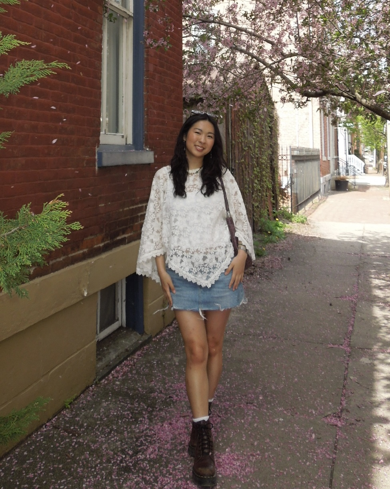
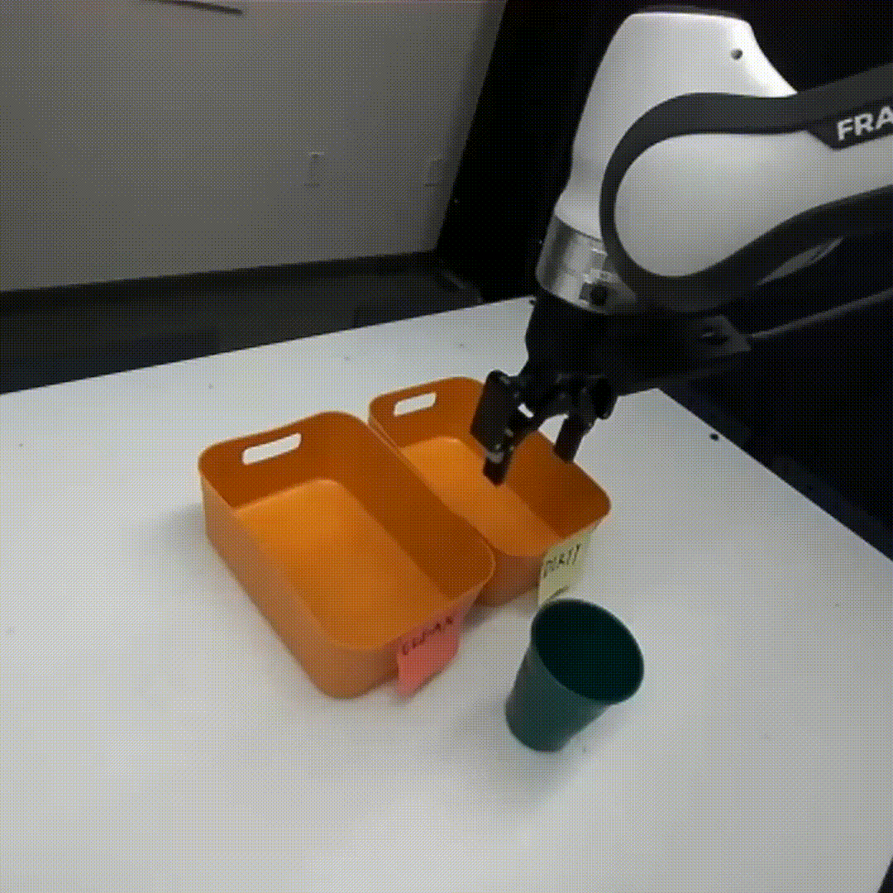
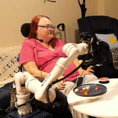

|
Jessie Yuan
I am a senior studying computer science at Carnegie Mellon, broadly interested in human-robot interaction and robot learning.
|
 |
Publications |
|
 |
When to Act, Ask, or Learn: Uncertainty-Aware Policy Steering
Jessie Yuan*, Yilin Wu*, Andrea Bajcsy Under Review, 2026 arXiv / website |
|
 |
WAFFLE: A Wearable Approach to Bite Timing Estimation in Robot-Assisted Feeding
Akhil Padmanabha*, Jessie Yuan*, Tanisha Mehta, Rajat Kumar Jenamani, Eric Hu, Victoria de Léon, Anthony Wertz, Janavi Gupta, Ben Dodson, Yunting Yan, Carmel Majidi, Tapomayukh Bhattacharjee†, Zackory Erickson† The ACM/IEEE Conference on Human-Robot Interaction (HRI), 2026 arXiv / video / website |

|
VoicePilot: Harnessing LLMs as Speech Interfaces for Physically Assistive Robots
Akhil Padmanabha*, Jessie Yuan*, Janavi Gupta, Zulekha Karachiwalla, Carmel Majidi, Henny Admoni, Zackory Erickson The ACM Symposium on User Interface Software and Technology (UIST), 2024 arXiv / video / website / oral presentation |

|
Towards an LLM-Based Speech Interface for Robot-Assisted Feeding
Jessie Yuan, Janavi Gupta, Akhil Padmanabha, Zulekha Karachiwalla, Carmel Majidi, Henny Admoni, Zackory Erickson The ACM Symposium on User Interface Software and Technology (UIST) Adjunct, 2024 arXiv |
|
Updated Mar. 2026. Website adapted from Jon Barron's template. |